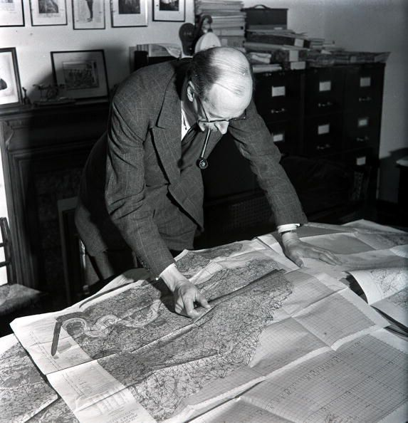
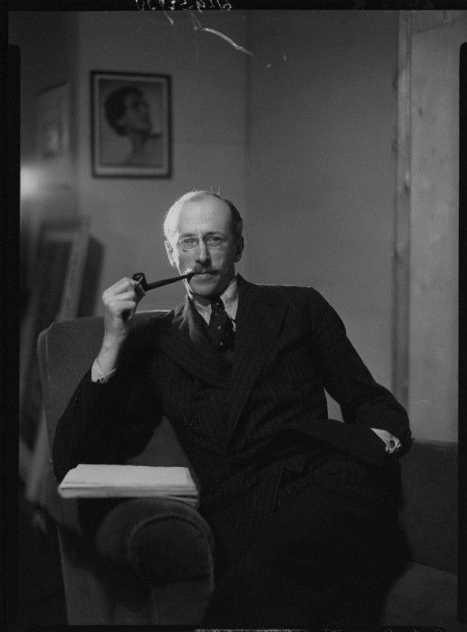

Давно хотел написать про замечательную книгу британского историка Бэзила Лиддел-Гарта "Стратегия непрямых действий". Ее я в первый раз прочитал в конце 90х и тогда она произвела на меня огромное впечатление, куда как большее, нежели более известная книга Лиддел-Гарта "Вторая мировая война". Лиддел-Гарт был весьма многогранной личностью, эволюционировав из обычного офицера прошедшего мясорубку битвы на Сомме http://colonelcassad.livejournal.com/2823738.html в видного военного теоретика своего времени (выпустив работы "Основы тактики пехоты" и "Новые пути современных армий") и в последствие в одного из самых известных британских историков середины XX века, где его "Вторая мировая война" явилась одной из лучших британских описательных работ на данную тематику.
Сполна хлебнув на собственном опыте бессмысленный и чрезвычайно затратный способ ведения войны в Первую мировую, Лиддел-Гарт уже в 20-х серьезно задумывался о том, откуда берутся эти настойчивые попытки решать проблемы в лоб, растрачивая огромные людские и материальные ресурсы в бесплодных попытках проломить лбом стену позиционного фронта. Постепенно, эти мысли оформились в концепцию, которую Лиддел-Гарт назвал "Стратегия непрямых действий" и написал книгу, в которой ее обосновывал, причем первое издание вышло в 1941 году и уже после войны переиздавалось с учетом опыта второй мировой войны. Вообще, его книги были признаны при жизни автора и несмотря на то, что Лиддел-Гарт считался буржуазным историком, издавались в Советском Союзе.
Книга представляет из себя весьма интересную конструкцию - сначала автор последовательно разбирает различные войны со времен античности до конца 2-й мировой войны и пытается доказать на характерных примерах из практики великих военоначальников, что непрямые действия как правило приносили больший эффект при меньших затратах, чем прямолинейные попытки разгромить противника решительным ударом в лоб, невзирая на потери и затраты. Соответственно, различные кровопролитные сражения, военные катастрофы и ошибки полководцев, Лиддел-Гарт трактовал как производные от нарушения базовых принципов стратегии, в том числе и тех, которые он постулировал. В какой-то степени, работа Лиддел-Гарта являлась аллюзией на известную нетленку Сунь-Цзы "Искусство войны" http://militera.lib.ru/science/sun-tszy/01.html, с которой некоторые выводы Лиддел-Гарта очень тесно переплетались и богато иллюстрировались многочисленными примерами из военной истории человечества.
Во второй части книги, рассмотрев десятки войн и сражений, автор излагает свои взгляды на войну в целом, свою теорию стратегии и свои выводы на основе анализа изученного военного опыта. При всех недостатках этого подхода связанного с несколько тенденциозным отбором исторических примеров (например, весьма странно игнорирование опыта Суворова, чьи сражения как раз блестяще иллюстрируют тезисы Лиддел-Гарта) и вполне объяснимым креном в сторону западно-центричной картины мира, ввиду чего русское военное искусство оказалось отражено весьма вскользь, Лиддел-Гарт собрал богатую коллекцию наглядных и поучительных примеров. С другой стороны, у Лиддел-Гарта получилось создать достаточно цельную картину основных вех европейской военной истории и достаточно наглядно показать некоторые закономерности, которые проявлялись в этих войнах на протяжении веков. Отстаивая тезис, что сражения в первую очередь выигрывались в головах полководцев, а уже во вторую очередь героизмом солдат, Лиддел-Гарт достаточно глубоко погрузился в тему психологии войны, когда процессы протекавшие в головах полководцев древности, генералов и начальников штабов современности, оказывали решающие влияние на развитие сражений и операций. У нас, несколько раньше Лиддел-Гарта, эту тему затрагивал в своей книге "Мозг армии" http://militera.lib.ru/science/shaposhnikov1/index.html будущий маршал Шапошников, но Шапошников эти вопросы затрагивал скорее как практик, а Лиддел-Гарт смотрел на вопросы управления войной через призму общей теории, которая не привязана только лишь к войнам индсутриального периода.
В итоге, при прочтение этой книги, вы получите масштабную картину ключевых военных конфликтов человеческой истории с сопутствующей теорией на тему общих закономерностей объясняющих причины побед и неудач, где красной нитью будет проходить мысль, что прямой путь зачастую длиннее и накладнее, чем путь обходной. Разумеется, это лишь теория и ее можно оспорить на других примерах, которые у автора выведены как исключения, подтверждающие общее правило. Но тут на мой взгляд надо просто помнить, что в богатой военной истории человечества было столько различных ситуаций, что одной обще-универсальной теорией их не объснить и в единую систему закономерностей не свести. Поэтому я на эту концепцию Лиддел-Гарта смотрю как на достаточно непротиворечивую систему объясняющую природу побед и поражений в значительной части сражений и войн.
Выводы автора в 4-й части "Стратегии непрямых действий", служат даже лучшей рекламой этой книги, нежели богатой историко-иллюстративный материал ей предшествующий.
Говоря о цели войны, необходимо хорошо представить себе различие между политической и военной целями. Эти цели различны, но тесно связаны между собой, ибо страны ведут войну не ради самой войны, а ради достижения политической цели. Военная цель является только средством достижения политической цели. Следовательно, военная цель должна определяться политической целью, причем следует соблюдать основное условие – не ставить неосуществимые военные цели.
Таким образом, изучение этой проблемы должно начинаться с политики и ею заканчиваться.
Термин «объект», хотя и распространенный, не является удобным для пользования. В нем заложен физический и географический смысл, и, следовательно, он может внести путаницу. Было бы лучше пользоваться терминами «цель», когда речь идет о цели политики, и «военная цель», говоря об использовании вооруженных сил в интересах политики.
Цель войны — добиться лучшего, хотя бы только с вашей точки зрения, состояния мира после войны. Следовательно, ведя войну, важно постоянно помнить, какой мир вам нужен. Это относится в одинаковой степени как к агрессивным странам, домогающимся расширения своей территории, так и к миролюбивым, которые борются за самосохранение, хотя взгляды агрессивных и миролюбивых стран на то, что такое «лучшее состояние мира», весьма различны.
История показывает, что достижение военной победы само по себе не равносильно достижению цели политики. Но так как вопросами войны занимаются в основном военные, естественно, проявляется тенденция забывать об основной цели государства и отождествлять ее с военной целью. Вследствие этого всякий раз, когда начиналась война, политика слишком часто определялась военной целью. Последняя считалась конечной целью, а не просто средством достижения политической цели.
Хуже того, вследствие непонимания правильного соотношения между политической и военной целями, между политикой и стратегией, военная цель извращалась и слишком упрощалась.
* * *
Простое непрямое движение к противнику с последующим выходом в его тыл еще не является стратегическим непрямым действием. Стратегическое искусство не так просто. Вначале днижение может быть непрямым по отношению к фронту противника, но, разгадав замысел – выход в его тыл, — противник может перегруппировать свои войска, и тогда движение снова станет прямым по отношению к новой линии фронта.
Имея в виду, что противник может приготовиться к отпору ни новом направлении, необходимо основной обходный маневр дополнить маневрами на второстепенных направлениях, рассчитанными на отвлечение внимания противника. Целью такого отвлечения внимания является лишение противника свободы действий, причем оно должно вызвать как физический, так и психологический эффект. В физическом отношении действия по отвлечению внимания должны привести к рассредоточению сил противника или к использованию их на второстепенных направлениях, с тем чтобы эти силы не могли оказать эффективного противодействия нанесению удара на решающем направлении. В психологическом отношении этот же эффект достигается игрой на нервах командования противника и его дезинформацией. Вот что гласит стратегический девиз Джэксона: «Озадачивай, вводи в заблуждение и захватывай врасплох». Озадачить противника и ввести его в заблуждение – значит отвлечь его внимание, а внезапность действий служит важным фактором нарушения устойчивости противника. Посредством отвлечения внимания командования достигается распыление войск. Потеря противником свободы действий является результатом потери им свободы замысла.
* * *
Общей судьбой пророков и мыслителей во всех областях науки является неправильное истолкование их учения. Преданные своему учителю, но не разобравшиеся в вопросе о целях войны, ученики Клаузевица причинили больше вреда его первоначальной концепции, чем даже предубежденные и недальновидные его противники. Однако нужно признать, что сам Клаузевиц больше, чем кто-либо другой, вызвал неправильное истолкование своей теории. Будучи учеником Канта, он овладел философской формой изложения, не являясь философом в полном смысле этого слова. Его теория войны изложена слишком абстрактно и путано, и поэтому обычный военный, привыкший мыслить конкретно, сбивался с толку, следуя за ходом его аргументации, которая часто возвращалась назад с направления, по которому, казалось, вела. Находясь под впечатлением довольно путаных формулировок Клаузевица, он хватался за яркие, броские фразы, постигая только их поверхностный смысл и упуская из виду более глубокое содержание мыслей Клаузевица.
Величайший вклад Клаузевица в теорию войны состоял в подчеркивании значения психологических факторов. Выражая протест против модной в то время геометрической школы стратегии, он показал, что человеческий дух безгранично важнее, чем линии и углы оперативных построений. С глубоким пониманием он анализировал влияние на военные действия опасения и усталости, значение смелости и решительности. Однако именно ошибки Клаузевица оказали значительное влияние на последующий ход истории.
Клаузевиц слишком переоценивал сухопутные силы, что не давало ему возможности правильно оценить значение морской мощи. Он проявил близорукость, ибо на самом пороге механизированного периода войны заявил о своей уверенности в том, что превосходство в численности приобретает с каждым днем все более решающее значение. Такая заповедь усилила инстинктивный консерватизм военных, их сопротивление использованию новой формы превосходства, которая становилась все более возможной в связи с изобретением машин. Она также дала мощный толчок к повсеместному введению воинской повинности как самого простого средства обеспечения максимально возможной численности войск. Поскольку психологические факторы игнорировались, это означало, что армии стали больше подвержены панике и внезапному развалу. Раньше, хотя и не всегда, все же стремились формировать войска из хорошо вымуштрованных солдат.
* * *
Глубоко изучая опыт войн, Клаузевиц пришел к выводу, что «в основе всех военных действий лежит разум». Тем не менее воюющие страны, всегда находящиеся во власти своих страстей, никогда не обращали внимания на смысл этого изречения Клаузевица. Вместо того чтобы раскинуть умом, они предпочитали биться головой о ближайшую стену.
Обычно правительство, отвечающее за определение целей большой стратегии в войне, решает вопрос, как должна действовать стратегия – добиваться ли военного решения или как-то иначе. Как военные средства являются только одним из орудий для достижения цели большой стратегии (один из инструментов в руках хирурга), так и сражение (бой) представляется только одним из средств для достижения цели стратегии. Если условия благоприятны, то военные средства обычно дают самый быстрый эффект, если же условия неблагоприятны, то использовать такие средства нецелесообразно. Предположим, что стратегу предоставлено право добиваться военного решения. Тогда его задача – достигнуть своей цели при наиболее благоприятных условиях, чтобы результаты были наилучшими. Следовательно, его действительная цель заключается не столько в том, чтобы искать сражения (боя), сколько в том, чтобы добиться создания выгодной стратегической обстановки. Если эта обстановка сама по себе не приведет к решению, то во всяком случае она должна обеспечить достижение его путем сражения. Иными словами, целью стратегии является нарушение устойчивости противника, результатом этого может оказаться распад армии противника либо будет обеспечен ее разгром в сражении. Для того чтобы армия противника распалась, могут потребоваться некоторые боевые действия, но они не будут носить характера сражения.
* * *
В 1925 г. я сам зашел слишком далеко, доказывая преимущества нанесения воздушных ударов по гражданским объектам. Однако вскоре я несколько исправил свою ошибку, подчеркнув, что важно эту задачу выполнить таким путем, чтобы «постоянный ущерб был по возможности наименьшим, так как сегодняшний противник завтра будет нашим покупателем, а послезавтра – нашим союзником» Тогда я был убежден, что «решительное воздушное нападение причинит меньше разрушений, чем длительная война, и меньше истощит силы противной стороны, которые ей понадобятся в будущем для восстановления разрушенного».
При дальнейшем изучении этого вопроса я пришел к выводу, что воздушное нападение на промышленные центры не может дать немедленный решающий результат. Такое нападение, вероятнее всего, приведет к появлению новой формы продолжительной войны на истощение, которая, возможно, принесет меньше жертв, но будет более разрушительной, чем война 1914-1918 гг. Однако штаб военно-воздушных сил был гораздо менее склонен соглашаться с пересмотренным выводом, чем с прежним. Он продолжал лелеять надежду на достижение быстрого решения. Когда опыт войны заставил их отказаться от этого, они бросились в другую крайность: стали рассчитывать на промышленное истощение противника. Военно-воздушные силы начали проводить бомбардировку промышленных центров с таким же рвением, с каким в Первую Мировую войну Генеральный штаб проводил операции на истощение людских ресурсов.
* * *
Отсутствие вариантов действий противоречит самой сущности войны. Оно грешит против умнейшего положения, выдвинутого Бурсе в XVIII в., что «план любой кампании должен иметь несколько вариантов и должен быть настолько хорошо продуман, чтобы один из этих вариантов обязательно увенчался успехом». Этого положения придерживался военный наследник Бурсе – молодой Наполеон Бонапарт, всегда старавшийся, как он сам говорил, faire son theme en deux facons. Через 70 лет Шермн на основе опыта пришел к такому же выводу и сформулировал свое знаменитое правило: «Всегда ставь противника перед дилеммой». Во всех случаях, когда имеется противник, следует предусматривать несколько вариантов действий. Приспособляемость является законом; как во время войны, так и в жизни выживают наиболее приспособившиеся. Война является не чем иным, как концентрированной формой борьбы людей против их окружения.
Для того чтобы план был реальным, необходимо учитывать противодействие, которое может оказать противник. Для более эффективного преодоления этого противодействия нужно предусмотреть возможность изменения плана сообразно сложившимся условиям. Чтобы сделать план гибким, сохраняя в то же время инициативу в своих руках, лучше всего действовать в направлении, на котором может быть создана угроза сразу нескольким объектам. Этим вы поставите противника перед дилеммой, что поможет вам захватить по крайней мере один наименее охраняемый объект, а может быть, за одним и другой.
* * *
Позитивные принципы
1. Выбирайте цель по своим средствам. При определении цели следует руководствоваться здравым смыслом и трезвым расчетом. Бессмысленно «откусывать больше, чем можете проглотить» . Первым признаком военной мудрости является умение отличить возможное от невозможного. Учитесь смотреть в лицо фактам, не теряя веры в свои силы. Вера очень понадобится (та вера, которая помогает достигнуть, казалось бы, невозможного), когда начнутся боевые действия. Уверенность подобна электрическому току в батарее. Не допускайте истощения ее в напрасной трате сил. Помните, что ваша уверенность будет бесполезной, если элементы вашей батареи – люди, от которых вы зависите, — будут морально подавлены.
2. Никогда не забывайте о цели, когда вы приводите свой план в соответствие с изменившейся обстановкой. Имейте в виду, что вашей цели вы можете достигнуть различными путями, но следите за тем, чтобы захват каждого промежуточного объекта приближал вас к намеченной цели. При выборе объектов оцените возможность их захвата и то, в какой степени это скажется на достижении основной цели. Плохо отклониться в сторону, но еще хуже оказаться в безвыходном положении.
3. Выбирайте для своих действий такое направление, откуда противник меньше всего ожидает удара. Поставьте себя на место противника и решите за него, какое направление он будет считать для себя менее опасным и поэтому не примет соответствующих предупредительных мер.
4. Действуйте по линии наименьшего сопротивления, придерживайтесь такого направления до тех пор, пока сможете без лишних потерь продвигаться к намеченному объекту, захват которого приблизит вас к вашей цели (В тактике этот принцип распространяется на использование резервов, а в стратегии – на развитие любого тактического успеха.)
5. Выбирайте направление, на котором может быть создана одновременная угроза нескольким объектам. Тем самым вы поставите противника перед дилеммой и, воспользовавшись этим, сможете захватить по крайней мере хотя бы один менее защищенный объект, а может быть, и другие объекты.
Наличие одновременной угрозы нескольким объектам создает благоприятные предпосылки для захвата одного из них. Если же вы наметите только один объект, в этом случае противник не окажется беспомощно слабым, и вы наверняка потерпите фиаско, поскольку противник будет знать направление вашего удара. Нет более распространенной ошибки, чем смешение понятий «выбор одного направления действий», что обычно является правильным, и «выбор одного объекта» для нанесения удара, что обычно не увенчивается успехом. (Этот принцип применим главным образом в стратегии, но его следует применять где только возможно и в тактике. В сущности он является основой тактики просачивания войск.)
6. Обеспечьте гибкость вашего плана и диспозиции войск с учетом возможных изменений в обстановке. В плане вы должны предусмотреть и разработать дальнейшие мероприятия на слу чай успеха, неудачи или частичного успеха, что чаще всего бывает во время войны. Диспозиция ваших войск (или их группировка) должна быть такой, чтобы она давала возможность в короткий срок развить наметившийся успех или произвести перегруппировку применительно к новой обстановке.
Негативные принципы
7. Не наносите удар всеми силами, пока противник начеку, т.е. когда он занимает выгодные позиции для отражения удара или уклонения от него. История учит, что если противник не слишком слаб, невозможно нанести ему эффективный удар, пока не парализована сила его сопротивления или способность уклоняться от удара. Поэтому ни один командир не должен наносить удар противнику, закрепившемуся на позиции, до тех пор пока не убедится в том, что противник парализован. Паралич противника достигается его дезорганизацией и ее моральным эквивалентом – деморализацией
8. Не возобновляйте наступления на том же направлении (или в той же группировке) после того, как оно потерпело неудачу. Простое усиление войск не является достаточным основанием для возобновления наступления, поскольку противник также сможет в период затишья усилить свои войска. Кроме того, вполне вероятно, что успешное отражение противником вашего предыдущего наступления укрепит его и в моральном отношении
В дополнение к этим принципам для обеспечения успеха должны быть решены две основные задачи: нарушить устойчивость противника и развить успех. Первая задача выполняется до нанесения удара, вторая – после нанесения удара. Сам удар по сравнению с этими двумя задачами является довольно несложным актом. Вы не сможете нанести противнику эффективный удар, если сначала не создадите для этого благоприятные условия. Вы не сможете довести этот удар до решающего результата, если не используете вторую благоприятную возможность, которая появится прежде, чем противник сможет прийти в себя.
Важность этих двух задач никогда в достаточной степени не учитывалась, вследствие чего большинство войн не приводило к решающему результату. При подготовке войск основное внимание обращается на детальную отработку элементов наступательного боя. Такое сосредоточение усилий на отработке тактических приемов затеняет значение психологического элемента. Войска приучаются действовать по шаблону, вместо того чтобы применять внезапные действия. Командиры настолько боятся допустить какую-нибудь ошибку в своих действиях, нарушить уставные положения, что забывают о необходимости заставить противника сделать неправильный шаг. Вследствие этого их планы успеха не имели. Ведь именно серьезные ошибки, допускаемые в ходе войны, очень часто оказывают решающее влияние. Иногда командир, избегнув очевидного, находит в неожиданном ключ к решению задачи, если счастье ему не изменило. Счастье нельзя отделить от войны, так как сама война составляет часть жизни. Неожиданные действия не могут гарантировать успех. Однако они гарантируют лучшие шансы на успех.
* * *

Лиддел-Гарт. 1947-й год.
Цель войны — добиться лучшего состояния мира, хотя бы только с вашей точки зрения. Поэтому при ведении войны важно постоянно помнить о тех целях, которых вы желаете достигнуть после войны. Эту истину, лежащую в основе определения Клаузевицем войны как «продолжения политики другими средствами», т.е. продолжения этой политики в течение всей войны и даже в мирное время, никогда нельзя забывать. Государство, которое растрачивает свои силы до полного истощения, делает несостоятельной свою собственную политику и ухудшает перспективы на будущее. Если вы сосредоточите свои усилия исключительно на том, чтобы добиться победы, не думая о последствиях войны, то можете настолько истощить себя, что окажетесь не в состоянии извлечь для себя выгоду из последующего мира. В то же время послевоенное устройство мира почти наверняка будет неустойчивым, и в нем будут содержаться зародыши новой войны. Это положение в достаточной степени подтверждается опытом.
* * *

Лиддел-Гарт. Лондон. 1970-й год.
Благоразумнее идти на риск войны ради сохранения мира, чем подвергать себя опасности истощения в войне ради достижения победы – вывод, который противоречит привычке, но подкрепляется опытом. Настойчивость в войне будет оправдана только при хороших шансах на хороший конец, т. е. при перспективах на установление такого мира, который компенсирует человеческие страдания, перенесенные в борьбе. Глубокое изучение опыта прошлого показывает, что государства часто могут подойти ближе к своей цели, если воспользуются затишьем в борьбе для урегулирования спорных вопросов путем переговоров, а не будут стремиться продолжать войну до «победы».
История показывает также, что во многих случаях можно было заключить выгодный мир, если бы государственные деятели воюющих стран проявили большее понимание психологии человека, зондируя почву для заключения мира. Часто государственные деятели оказываются в таком же положении, которое создается во время обычной домашней ссоры. Каждая из спорящих сторон боится показаться уступчивой, а когда одна из них наконец проявляет склонность к примирению, выражая это обычно слишком принужденным языком, другая сторона не идет ей навстречу отчасти из ложного чувства гордости или упрямства, а отчасти из-за того, что считает такой жест проявлением слабости другой стороны. На самом деле уступчивость другой стороны, скорее всего, является свидетельством ее обращения к здравому смыслу. Таким образом упускается удобный момент для примирения и ссора продолжается, принося вред обеим сторонам. Редко продолжительная ссора приносит пользу там, где обе стороны вынуждены жить под одной крышей. Еще в большей степени, чем при домашней ссоре, это положение остается в силе в современной войне, поскольку промышленное развитие стран связало их судьбы. Поэтому-то государственные деятели несут ответственность за то, чтобы в погоне за «миражом победы» никогда не терять из виду перспективу послевоенного устройства мира.
* * *
История дает достаточно доказательств того, что цивилизованные государства терпят поражение не столько вследствие на а падения врагов, сколько от внутреннего разложения и истощения в результате войны. Состояние неопределенности весьма мучительно, оно часто приводило как страны, так и отдельных лиц к самоубийству. Однако неопределенность все же лучше, чем истощение в результате погони за призраком победы. Кроме того, перемирие позволяет восстановить и развить силы, тогда как необходимость проявления бдительности заставляет страну находиться все время в напряженном состоянии. Однако мирные страны могут поставить себя под ненужную угрозу, потому что, поднявшись на войну, в большей мере склонны доводить ее до крайностей, чем агрессивные страны. Последние, ведя войну с захватнической целью, обычно легче отказываются от нее, как только убедятся, что противник оказался слишком сильным. Довести схватку до конца старается только боец, поневоле побуждаемый чувствами, а не трезвым расчетом Поэтому он часто не достигает своей цели, даже если и не потерпит прямого поражения. Ведь дух варварства может быть ослаблен только во время перемирия; война же укрепляет его, подливая масло в огонь.
И так далее. В книге много таких обобщающих выводов о природе войны и сущности стратегии направленной на достижение победы и "лучшего мира, нежели довоенный". При этом, как не трудно заметить, многие из этих выводов не утеряли своей актуальности ни для войн второй половины XX века, ни для войн начала XXI века, что на мой взгляд лишний раз указывает на историческую и теоретическую ценность "Стратегии непрямых действий".
http://militera.lib.ru/science/liddel_hart1/index.html - читать книгу "Стратегия непрямых действий" (издание 1954 года - насколько помню, содержало некоторое купюры)
http://www.chitai-gorod.ru/catalog/book/763269/ - купить бумажный вариант - 390 рублей (так же можно встретить по 450-550 рублей).
Еще из творчества Лиддел-Гарта я бы рекомендовал к ознакомлению книги "Первая мировая война" и "Вторая мировая война", а так же запись его бесед с пленными генералами и фельдмаршалами Третьего Рейха, с которыми британский историк смог побеседовать после окончания второй мировой войны.